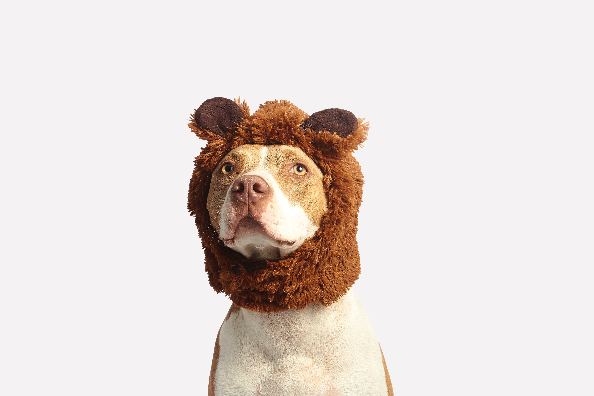

The American Staffordshire Terrier is a muscular breed that is known for being strong for its size, yet loving and affectionate with its human family. American Staffordshire Terriers enjoy nothing more than being with the humans they care about, whether they’re out for a jog, playing in the yard, or cuddling up on the couch.
They are intelligent and eager to please, which makes them highly trainable, though that intelligence means they need mental stimulation, or else they’ll put those strong jaws to use and chew anything they can find out of boredom. American Staffordshire Terriers can also use their strength to pull dog walkers along with ease wherever they want to go if they aren’t trained properly. This means they need a strong, confident trainer who will set boundaries without being overly harsh. Socialization is also important to help the breed overcome its natural standoffish tendencies when it comes to other animals.
This breed loves having a job to do, and they do well in athletic competitions, police work, and obedience training. With proper training, the American Staffordshire Terrier can be a loyal cuddle bug and family companion, as well as a competent working dog.
The American Staffordshire Terrier is a loving, loyal, playful dog that loves to spend time with human family members. They are quite muscular for their size, which can make them a handful on walks if they aren't trained properly. They also have strong jaws, which they will use to chew out of boredom. Many a piece of furniture has been destroyed by an American Staffordshire Terrier that isn't physically and mentally stimulated enough. However, a confident, firm trainer that can meet the physical demands of the breed without harsh punishment will be rewarded with a calm, obedient dog that is comfortable with nose work, agility exercises, and athletic competitions, as well as just snuggling up on the couch.
Although they are used as watchdogs, their natural love of humans makes the American Staffordshire Terrier's guarding ability more based on intimidation than anything else. Their muscular build and reputation as aggressive dogs act as deterrents from intruders, though that reputation is mostly undeserved.
The American Staffordshire Terrier shares much in common with the American Pit Bull Terrier. Both have been used in illegal dog fighting rings, which makes them the targets of Breed Specific Legislation that bans them. But when brought up in a home with love that gives them proper training and socialization, American Staffordshire Terriers are docile, affectionate animals that are very loyal and obedient.